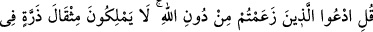
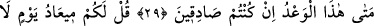
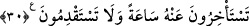

TANRI SAYDIĞINIZ
ŞEYLERİ ÇAĞIRIN!
22. (Müşriklere) de ki: “Allah’tan başka tanrı saydığınız şeyleri çağırın!” Onlar
ne göklerde ne de yerde zerre ağırlığınca bir şeye sahiptirler. Onların buralarda
hiçbir ortaklığı yoktur, Allah’ın da onlardan bir yardımcısı yoktur.
23. Allah’ın huzurunda, kendisinin izin verdiği kimselerden başkasının şefâati
fayda vermez. Nihayet onların yüreklerinden korku giderilince: Rabbiniz ne
buyurdu? derler. Onlar da: Hak olanı buyurdu, derler. O, yücedir, büyüktür.
24. (Rasûlüm!) De ki: Göklerden ve yerden size rızık veren kimdir? De ki:
Allah! O halde biz veya siz, ikimizden biri, ya doğru yol üzerinde veya açık bir
sapıklık içindedir.
25. De ki: Bizim işlediğimiz suçtan siz sorumlu değilsiniz; biz de sizin
işlediğinizden sorulacak değiliz.
26. De ki: Rabbimiz hepimizi bir araya toplayacak, sonra aramızda hak ile
hükmedecektir. O, en âdil hüküm veren, (her şeyi) hakkıyla bilendir.
27. De ki: O’na (Allah’a) kattığınız ortaklarınızı bana gösterin. Hayır! Bilakis,
yegâne galip ve her şeyi hikmetle idare eden ancak Allah’tır.